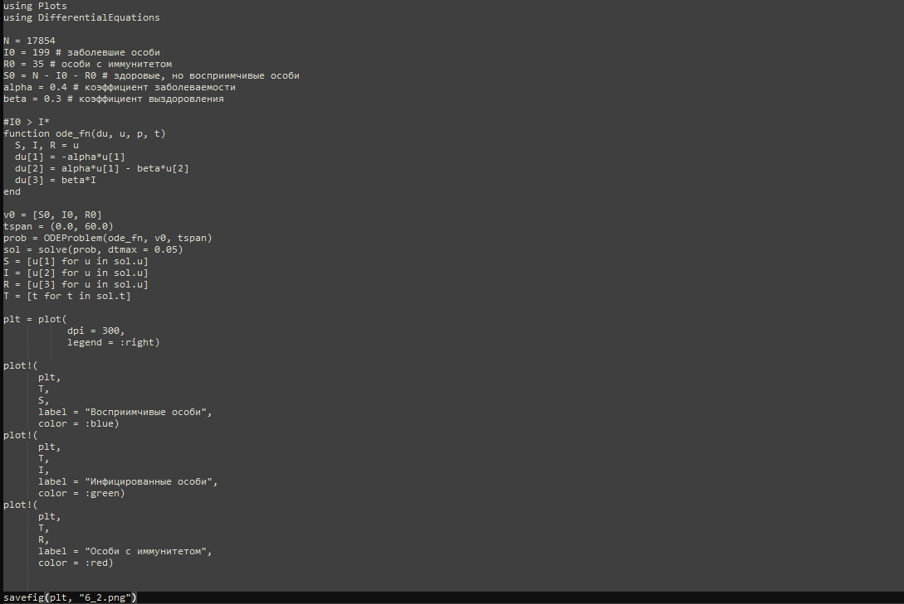

{ #fig:004 width=70% height=70% }
{ #fig:004 width=70% height=70% }lang: ru-RU title: Лабораторная работа номер 6 author: Куденко Максим date: 01.03.2024
toc: false slide_level: 2 theme: metropolis header-includes:
Изучить и построить модель эпидемии.
Рассмотрим простейшую модель эпидемии. Предположим, что некая популяция, состоящая из $N$ особей, (считаем, что популяция изолирована) подразделяется на три группы. Первая группа - это восприимчивые к болезни, но пока здоровые особи, обозначим их через $S(t)$. Вторая группа – это число инфицированных особей, которые также при этом являются распространителями инфекции, обозначим их $I(t)$. А третья группа, обозначающаяся через $R(t)$ – это здоровые особи с иммунитетом к болезни. До того, как число заболевших не превышает критического значения $I^$, считаем, что все больные изолированы и не заражают здоровых. Когда $I(t)> I^$, тогда инфицирование способны заражать восприимчивых к болезни особей.
Таким образом, скорость изменения числа $S(t)$ меняется по следующему закону:
$$
\frac{dS}{dt}=
\begin{cases}
-\alpha S &\text{,если $I(t) > I^$}
\
0 &\text{,если $I(t) \leq I^$}
\end{cases}
$$
Поскольку каждая восприимчивая к болезни особь, которая, в конце концов, заболевает, сама становится инфекционной, то скорость изменения числа инфекционных особей представляет разность за единицу времени между заразившимися и теми, кто уже болеет и лечится, то есть:
$$
\frac{dI}{dt}=
\begin{cases}
\alpha S -\beta I &\text{, если $I(t) > I^$}
\
-\beta I &\text{, если $I(t) \leq I^$}
\end{cases}
$$
А скорость изменения выздоравливающих особей (при этом приобретающие иммунитет к болезни):
$$\frac{dR}{dt} = \beta I$$
Постоянные пропорциональности $\alpha, \beta$ - это коэффициенты заболеваемости и выздоровления соответственно. Для того, чтобы решения соответствующих уравнений определялось однозначно, необходимо задать начальные условия. Считаем, что на начало эпидемии в момент времени $t=0$ нет особей с иммунитетом к болезни $R(0)=0$, а число инфицированных и восприимчивых к болезни особей $I(0)$ и $S(0)$ соответственно. Для анализа картины протекания эпидемии необходимо рассмотреть два случая: $I(0) \leq I^$ и $I(0)>I^$
Вариант 59
На одном острове вспыхнула эпидемия. Известно, что из всех проживающих на острове (N=17 854) в момент начала эпидемии (t=0) число заболевших людей (являющихся распространителями инфекции) I(0)=199, А число здоровых людей с иммунитетом к болезни R(0)=35. Таким образом, число людей восприимчивых к болезни, но пока здоровых, в начальный момент времени S(0)=N-I(0)- R(0). Постройте графики изменения числа особей в каждой из трех групп. Рассмотрите, как будет протекать эпидемия в случае:
$I(0)\leq I^*$
$I(0)>I^*$
Код программы для случая $I(0) \leq I^*$:
{ #fig:001 width=70% height=70% }
Код программы для случая $I(0)>I^*$:
{ #fig:002 width=70% height=70% }
{ #fig:003 width=70% height=70% }
{ #fig:004 width=70% height=70% }
Код программы для случая $I(0) \leq I^*$:
 { #fig:005 width=70% height=70% }
{ #fig:005 width=70% height=70% }
Код программы для случая $I(0)>I^*$:
 { #fig:006 width=70% height=70% }
{ #fig:006 width=70% height=70% }
 { #fig:007 width=70% height=70% }
{ #fig:007 width=70% height=70% }
 { #fig:008 width=70% height=70% }
{ #fig:008 width=70% height=70% }
В итоге проделанной работы мы построили графики зависимости численности особей трех групп S, I, R для случаев, когда больные изолированы и когда они могут заражать особей группы S.
Построение модели эпидемии на языке OpenModelica занимает значительно меньше строк, чем аналогичное построение на Julia. Кроме того, построения на языке OpenModelica проводятся относительно значения времени t по умолчанию, что упрощает нашу работу.
В ходе выполнения лабораторной работы была изучена модель эпидемии и построена модель на языках Julia и Open Modelica.
[1] Документация по Julia: https://docs.julialang.org/en/v1/
[2] Документация по OpenModelica: https://openmodelica.org/
[3] Решение дифференциальных уравнений: https://www.wolframalpha.com/
[4] Конструирование эпидемиологических моделей: https://habr.com/ru/post/551682/